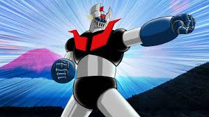
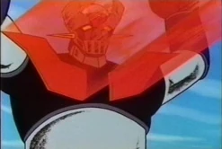
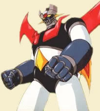

Información del Personaje
Origen: Laboratorio de Investigación Fotoatómica, Japón
Altura: 18 metros
Peso: 20 toneladas
Alianza: ALIADO PRIORITARIO
Historia
Mazinger Z es uno de los robots de combate más confiables y poderosos en la lucha contra amenazas kaiju y mecánicas a nivel mundial. Creado por el Dr. Juzo Kabuto y pilotado por Koji Kabuto, este mecha ha sido una pieza clave en la defensa de Japón y otras regiones del mundo. Gracias a su avanzada tecnología de energía fotoatómica y su arsenal de armas de alto impacto, Mazinger Z ha demostrado ser una barrera formidable contra múltiples amenazas, desde kaijus hasta organizaciones terroristas con intenciones de dominación global.
La WKDF ha declarado a Mazinger Z como un aliado prioritario debido a su historial impecable en combate y la fiabilidad de su piloto. Koji Kabuto, con su experiencia y valentía, ha demostrado una capacidad excepcional para maniobrar el mecha incluso en las situaciones más críticas, asegurando siempre la protección de la humanidad.
Mazinger Z es considerado un pilar en la defensa de la humanidad contra amenazas kaiju y mecánicas. La WKDF confía plenamente en la capacidad de Koji Kabuto, asegurando que siempre será un protector de la paz y la estabilidad global. Su presencia es una garantía de que, en tiempos de crisis, la humanidad siempre tendrá un as bajo la manga para enfrentar cualquier desafío.
Estrategia WKDF para la Gestión de Mazinger Z
1.Colaboración con el Laboratorio Fotoatómico: Coordinación para mantener y mejorar el rendimiento de Mazinger Z..
2.Integración con unidades WKDF: Incorporación de estrategias de combate en conjunto con otras fuerzas de defensa.
3.Autonomía de Koji Kabuto: Total confianza en su juicio como piloto, asegurando siempre la mejor estrategia en el campo de batalla.
4.Protocolo de despliegue inmediato: En caso de amenaza de nivel Omega, Mazinger Z tiene autorización prioritaria para intervenir.
Imagen del Sujeto
Habilidades
Puño Cohete
Su movimiento característico: Mazinger dispara su antebrazo como un misil, golpeando directamente a un enemigo antes de regresar y volviendo a conectarse a su muñeca nuevamente.
Breast Fire
Las grandes aletas rojas del pecho de Mazinger Z actúan como disipadores de calor para su reactor de energía fotónica. Mazinger Z puede liberar esta energía térmica almacenada en un potente rayo incandescente de 30.000 grados que derrite prácticamente cualquier cosa.
Jet Scrander
Con el Jet Scrander, Mazinger Z puede volar, lo que le proporciona defensa contra enemigos aéreos. Cuando es necesario, se lanza desde una catapulta en el Laboratorio de Investigación Fotónica y vuela hacia la ubicación de Mazinger. En algunos casos, Mazinger Z corre y salta para encontrarse con él; en otros, reduce la velocidad y se acerca a un Mazinger Z inmóvil.
Videos de Metraje Encontrado
Video de Evidencia 1: Mazinger vs Dayan N4
Video de Evidencia 2: Mazinger vs Baron Ashler
Video de Evidencia 3: Mazinger vs las bestias mecanicas
Video de Evidencia 4: El alzar de Great Mazinger